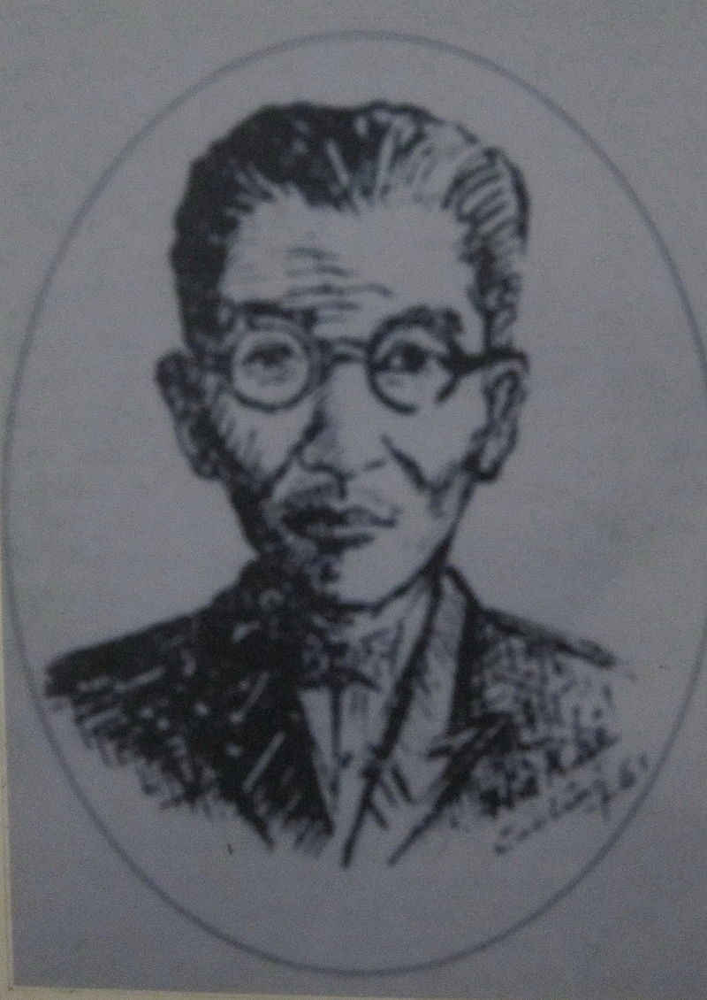

Cụ Nguyễn-Quang-Diêu hiệu Tử-Ngọc, biệt danh Trần-Cảnh-Sơn, Nam-Xương bí danh Trần-Văn-Vẹn, sanh tại Cao-Lãnh (tỉnh Sa-Đéc, sau này Cao-Lãnh đổi thành tỉnh-lỵ Kiến-Phong) năm Canh-Thìn 1880. Mất tại Vĩnh-Hòa, Tân-Châu, năm Bính-Tý (1936). Cuộc đời tuy không dài lắm của cụ, nhưng cụ đã lưu lại nhiều thành tích đáng kể trong lịch-sử cách-mạng và lịch-sử văn-học Việt-Nam.

Chí-sĩ Nguyễn-Quang-Diêu
Họa-sĩ Hà-Khê vẽ theo tường thuật của tiên-sinh Nguyễn-Chánh-Giáo.
Ngày nơi sanh và nơi mất của cụ, làng Tòng-Sơn (thuộc quận Lấp-Vò, tỉnh Sa-Đéc ngày nay) còn là nơi quê vợ cụ có lắm lúc dính liền với Tòng-Sơn, và ngày nay, hài cốt cụ đã được bốc lên từ Vĩnh-Hòa để mang về cải táng tại Tòng-Sơn (Sa-Đéc). Cho nên viết về Sa-Đéc mà thiếu đề cập nhân-vật Nguyễn-Quang-Diêu, sẽ bị xem là khuyết-điểm to.
Thuở còn trẻ, Nguyễn-Quang-Diêu đã nổi tiếng là người gan dạ và thẳng thắng. Nhà vốn dư ăn, thân-phụ lại là người có học, có địa vị xã hội quan trọng trong vùng, nên cụ sớm được theo đường nghiên bút.
Năm 18 tuổi, rời quê nhà, cụ đến thụ-giáo với cụ Tú-Tài Trần-Hữu-Thường ở Phú-Nhuận (Châu-Đốc). Tú Thường là bạn đồng học với Thủ-Khoa-Huân, không đánh giặc như cụ Thủ-Khoa, nhưng cụ Tú rất ghét Tây và quyết giữ khí tiết của một nhà cao ẩn. Học trò của cụ Tú Thường đông đến hàng ngàn, khắp từ các tỉnh miền Tây về nghe sách nơi cụ. Nguyễn-Quang-Diêu tỏ ra xuất sắc: giàu lý luận, sành thi ca, thông suốt điệu nghĩa Nho-giáo. Nhưng cụ không lấy vậy làm thích, mà hằng cho cái trò điêu trùng khắc triện không bằng cái chí xẻ núi lấp sông của các bậc anh hùng. Nên tuy theo học ở trường, cụ vẫn theo dõi tình hình chính trị.
Năm 1910, cụ đúng 30 tuổi, bỏ học, chính thức đứng ra xướng xuất phong trào bài Tây phục quốc. Cụ cổ vỏ cho phong trào Đông-du của cụ Phan-Bội-Châu. Nhiều người theo cụ, đứng ra vận động và làm thành một nhóm có thế lực quần chúng, khiến Pháp giật mình. Họ lùng kiếm cụ và từ đó cụ phải ẩn tránh luôn.
Tháng 5 năm 1913, Nguyễn-Quang-Diêu được các đồng chí vận động tiền bạc đưa cụ xuất dương. Cụ liên lạc với cụ Cường-Để tại một địa-điểm bí mật ở Long-Xuyên trước khi lên đường. Mục đích của lần xuất dương này là để lãnh "Chỉ-tệ tín phiếu" mua vũ khí, đưa thêm một số du học sinh và tìm gặp cụ Nguyễn-Thần-Hiến đang hoạt động tại Trung-Hoa. Phái đoàn gồm 12 người do cụ Nguyễn-Quang-Diêu hướng dẫn. Cụ Nguyễn-Quang-Diêu đã tiếp xúc với cụ Nguyễn-Thần-Hiến, Huỳnh-Hưng tại Hồng-Kong và dự định một chương trình hoạt động nội ngoại hô ứng. Nhưng sinh hoạt của phái đoàn đã lộ tiếng. Cảnh sát Anh tại Hồng-Kong đến khám nhà Huỳnh-Hưng, bên kia đảo Cửu-Long, bắt được 13 quả tạc đạn, một số tuyên truyền phẩm nên tịch thu tang vật và bắt luôn cả bọn. Hôm ấy là ngày 16 tháng 6 năm 1913.
Trong lao, Nguyễn-Quang-Diêu lại gặp Kiều-Ngoại-Hầu, Cường-Để, vốn cũng từ Tam-Kỳ trở sang Hồng-Kong và bị bắt. Nhưng cụ Cường-Để được Nguyễn-Hào-Vỉnh và Lâm-Cần mướn luật sư lãnh tại ngoại rồi trốn luôn. Riêng trong nhóm Nguyễn-Thần-Hiến, Nguyễn-Quang-Diêu, Đinh-Hữu-Thuật... đều bị giải về cho Tây tại Hà-Nội.
Trong bài Hà-Thành lâm nạn, cụ Nguyễn-Quang-Diêu viết:
Luật áp giải dã man đã quá,
Ỷ cường quyền xiềng cả chân tay.
Hỏa thuyền chạy suốt ba ngày,
Hải-Phòng đổ bến, giải ngay Hà-Thành.
Tại đây, Nguyễn-Quang-Diêu bi kêu án 10 năm khổ sai. Cụ bị đưa sang Pháp rồi sau đó, đày ra Guyane (một thuộc-địa của Pháp ở Nam-Mỹ).
Ở đây, người ta bắt các nhà cách mạng Việt-Nam lên rừng đốn cây cưa củi... làm những việc nặng nhọc của hạng tù đồ. Tuy nhiên, các cụ không vì vậy mà thối chí, trái lại vẫn coi thường khổ cực và vẫn quyết tâm hy vọng một ngày quốc vận vinh quang.
Năm 1917, sau khi bí mật liên lạc với một thương nhân Trung-Hoa, cụ được họ giúp đỡ vượt ngục trốn sang TRINIDAD. Đó là một hải đảo thuộc Anh mà người Pháp gọi TRINITÉ và người Tàu gọi Trì-Lí-Ni-Ních-đảo. Họ giúp Nguyễn-Quang-Diêu có cơ sở làm ăn tại một chi điểm thương hội.
Từ đó, ngày làm việc thương mại, đêm học tiếng Anh, cụ Nguyễn-Quang-Diêu vẫn đăm đăm hướng về Tổ-quốc theo dõi tình hình chính trị. Cuối năm 1920, Nguyễn-Quang-Diêu rời Trinidad để sang Tàu. Cụ liên lạc được với cụ Nguyễn-Hải-Thần và một số các đồng chí cách mạng khác. Nhưng vẫn chưa làm được gì. Cụ buồn bực, lui về Tứ-Xuyên làm tài phú cho một hiệu thuốc Bắc lớn để sinh nhai tạm bợ. Ta hãy nghe tâm sư cụ hồi qua bài Trung Thu Ngoạn Nguyệt mà chính cụ đã viết:
Bao độ tròn trăng hội Á - Âu,
Mà người cay đắng mấy mươi thâu...!
Năm 1926, cụ trở về nước và hoạt động khá mạnh ở các tỉnh Sa-Đéc, Châu-Đốc, Long-Xuyên. Cụ đã sáng tác nhiều tuyên truyền phẩm kháng Pháp và cụ đã bị lính kín Pháp truy nã quá gắt. Vài năm sau đó, cụ đành phải giả dạng một thầy đồ về ngồi dạy học chữ nho tại làng Vĩnh-Hòa thuộc biên-thùy Việt-Miên.
Cụ viết sách làm thơ, dịch sách rất nhiều. Nhưng đã bị thất lạc một số lớn vì sự khủng bố của thực dân. Học giả Nguyễn-Văn-Hầu trong tác phẩm viết về cuộc đời cụ, đem công phu nhiều năm sưu tập lại, còn được 98 bài thơ, phú, câu đối của cụ Nguyễn-Quang-Diêu mà trước kia cụ đã sáng tác tại nhiều nơi trên thế giới.
Năm 1936, cụ lâm bệnh rồi mất tại một miền đèo heo hút gió, nơi biên thùy xa xôi, giáp với Việt-Miên. Môn sinh họp nhau đứng ra chôn cất và xây mộ cho cụ rất khang-trang, mặc dù tình thế lúc bấy giờ hết sức khó khăn. Rất nhiều bài thơ ai-điếu cụ, nhiều câu đối khóc cụ, làm sao kể xiết. Chỉ xin rút một đôi câu đối, hàm sức cả cuộc sinh hoạt cách mạng của cụ:
Ngót hai chục năm dư, hồ hải từng quen Âu, Á, Mỹ,
Vừa năm mươi tuổi lẽ, dạ dài còn tạc hiếu, trung, cang.
Và xin chép lại một bài thơ của một đồng chí cụ đã khóc cụ:
Tìm đâu mà thấy cố nhân ta?
Tử-Ngọc cỏi trần đã lánh xa!
Nhớ trước Canh-Thìn năm xuất thế,
Tính nay Bính-Tí tuổi qui hà.
Quốc dân không khóc, ta thương khóc,
Thời thế tiêu ma, bác hóa ma.
Tâm sự đầu đuôi bao xiết kể,
Thương cho đất khách gởi xương già.
(Rút gọn theo tác phẩm "Chí-Sĩ Nguyễn-Quang-Diêu" của học-giả Nguyễn-Văn-Hầu, giải thưởng văn chương toàn quốc 1966 - Nhà xuất bản Xây Dựng.)